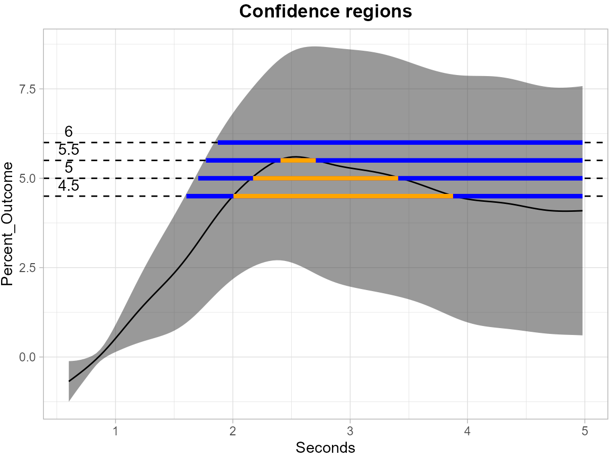
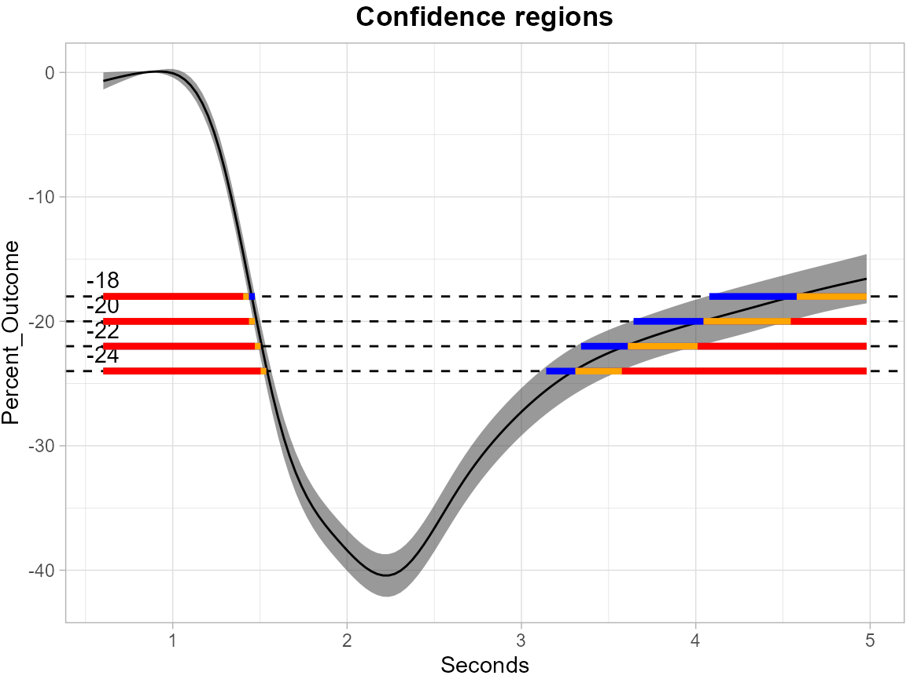

Functional_Data_Example
Angela Yu
2025-09-26
Source:vignettes/Functional_Data_Example.Rmd
Functional_Data_Example.RmdThe example here is to use pupil functional data to construct the simultaneous outer and inner confidence region from simultaneous confidence bands (SCB) using Function-on-Scalar Regression (FoSR).
The pupil dataset contains repeated measures of percent change over time for multiple subjects under two user categories (use: 1 and no use: 0). It contains both user and non-user groups, multiple time points, and several covariates, including age, gender, BMI, and alcohol consumption.
Before calculating the SCBs, we first process pupil data by fitting a
mean GAM model, extracting residuals and performing FPCA using
SCoRES::prepare_pupil_fpca(), the function will return an
enhanced dataset includes the FPCA-derived basis scores (Phi1, Phi2,
Phi3, Phi4) for Function-on-Scalar Regression (FoSR) analysis.
Following the FPCA-based data augmentation, we fit a FoSR model using
mgcv::bam(), which allows efficient estimation of
Generalized Additive Mixed Models (GAMMs). The model formula is designed
to capture both population-level smooth trends and subject-specific
functional variation.
The response here is percent_change. Time variable t is seconds. And the covariate is use, which is a binary variable (1:use, 0:no use).
The function-on-scalar regression model is
pupil_fpca <- SCoRES::prepare_pupil_fpca(pupil)
fosr_mod <- mgcv::bam(percent_change ~ s(seconds, k=30, bs="cr") +
s(seconds, by = use, k=30, bs = "cr") +
s(seconds, by = age, k = 30, bs = "cr") +
s(seconds, by = gender, k = 30, bs = "cr") +
s(id, by = Phi1, bs="re") +
s(id, by = Phi2, bs="re") +
s(id, by = Phi3, bs="re") +
s(id, by = Phi4, bs="re"),
method = "fREML", data = pupil_fpca, discrete = TRUE)After obtaining the FoSR object fosr_mod, simultaneous
confidence bands (SCB) can be constructed though
SCoRES::SCB_functional_outcome using pre-specified methods.
The SCoRES package provides two options for calculating simultaneous
confidence bands (SCBs), specified via the method argument:
cma: Correlation and Multiplicity Adjusted (CMA) confidence
bands via parametric approach. multiplier: Dense confidence
bands via Multiplier-t Bootstrap method. Use subset to
specify the names of grouping variables to analyze. The input data
should have numerical binary 0/1 values for all scalar group variables.
Here, we analyze the user group by specifying
subset = c("use = 1"). Use fitted to specify
the object for SCB estimation. If fitted = TRUE,
SCoRES::SCB_functional_outcome will construct the SCB for
the fitted mean outcome function. If fitted = FALSE,
SCoRES::SCB_functional_outcome will construct the SCB for
the fitted parameter function. For cma option, users are
required to provide a functional regression object through argument
object. For multiplier option, users also need
to provide input for object. If object = NULL,
the function will only output the SCB for an overall mean outcome
function regardless of the group specified.
Here, we estimated SCBs using both options separately for the mean outcome Y(t) of user’s group: where:
- is a functional outcome (percent_change)
- is a scalar covariate (use)
In the multiplier bootstrap procedure, SCoRES supports
three types of multiplier distributions, which is specified by
weights:
-
"rademacher": with equal probability -
"gaussian": -
"mammen": A two-point distribution with mean zero and variance one (see Mammen, 1993)
Default is rademacher.
Two options are available for estimating the standard error
,
which is specified by method_SD:
“regular” (empirical standard error based on residuals):
“t” (bootstrap second moment-based estimator):
Default is t.
For mathematical details, see vignette Methods.
The code below visualizes the simultaneous outer and inner region
derived from SCB results using the SCoRES::plot_cs()
function. The results object is first converted to a tibble
for easier manipulation.
The levels = c(-18, -20, -22, -24) argument specifies a
set of thresholds, and SCoRES::plot_cs() function estimates
multiple inverse upper excursion sets corresponding to these thresholds,
and plot the estimated inverse region, the inner confidence region, and
the outer confidence region.
# CMA approach
results_pupil_cma <- SCoRES::SCB_functional_outcome(
data_df = pupil,
object = fosr_mod,
method = "cma",
fitted = TRUE,
alpha = 0.05,
outcome = "percent_change",
domain = "seconds",
subset = c("use = 1"),
id = "id")
results_pupil_cma <- tibble::as_tibble(results_pupil_cma)
plot_cs(results_pupil_cma,
levels = c(-18, -20, -22, -24),
x = results_pupil_cma$domain,
mu_hat = results_pupil_cma$mu_hat,
xlab = "Seconds",
ylab = "Percent_Outcome",
level_label = T,
min.size = 40,
palette = "Spectral",
color_level_label = "black")
The plot demonstrate how to use SCB to find regions of s where the estimated mean is greater than or equal to the four levels -18, -20, -22 and -24 for ccds data. The gray shaded area is the 95% SCB, the solid black line is the estimated mean. The red horizontal line shows the inner confidence region (where the lower SCB is greater than the corresponding level) that are contained in the estimated inverse region represented by the union of the yellow and red horizontal line (where the estimated mean is greater than the corresponding levels); the outer confidence region are the union of the blue, yellow and red line (where the upper SCB is greater than the corresponding levels) and contain both the estimated inverse region and the inner confidence region.
The next plot shows the SCB for the coefficient function for the use group.
#CMA approach for parameter function
results_pupil_cma_para <- SCoRES::SCB_functional_outcome(
data_df = pupil,
object = fosr_mod,
method = "cma",
fitted = FALSE,
alpha = 0.05,
outcome = "percent_change",
domain = "seconds",
subset = c("use = 1"),
id = "id")
results_pupil_cma_para <- tibble::as_tibble(results_pupil_cma_para)
plot_cs(results_pupil_cma_para,
levels = c(4.5, 5, 5.5, 6),
x = results_pupil_cma_para$domain,
mu_hat = results_pupil_cma_para$mu_hat,
xlab = "Seconds",
ylab = "Percent_Outcome",
level_label = T,
min.size = 40,
palette = "Spectral",
color_level_label = "black")The following plots show the results of multiplier bootstrap. The
first one displays the SCB for mean outcome function for the use group,
while the second one is for the coefficient function of the use group.
All possible NA’s are inputted using
refund::fpca.face().
# Multiplier-t Bootstrap
results_pupil_multiplier <- SCoRES::SCB_functional_outcome(
data_df = pupil,
object = fosr_mod,
method = "multiplier",
fitted = TRUE,
alpha = 0.05,
outcome = "percent_change",
domain = "seconds",
subset = c("use = 1"),
id = "id")
results_pupil_multiplier <- tibble::as_tibble(results_pupil_multiplier)
plot_cs(results_pupil_multiplier,
levels = c(-18, -20, -22, -24),
x = results_pupil_multiplier$domain,
mu_hat = results_pupil_multiplier$mu_hat,
xlab = "Seconds",
ylab = "Percent_Outcome",
level_label = T,
min.size = 40,
palette = "Spectral",
color_level_label = "black")
results_pupil_multiplier_para <- SCoRES::SCB_functional_outcome(
data_df = pupil,
object = fosr_mod,
method = "multiplier",
fitted = FALSE,
alpha = 0.05,
outcome = "percent_change",
domain = "seconds",
subset = c("use = 1"),
id = "id")
results_pupil_multiplier_para <- tibble::as_tibble(results_pupil_multiplier_para)
plot_cs(results_pupil_multiplier_para,
levels = c(4.5, 5, 5.5, 6),
x = results_pupil_multiplier_para$domain,
mu_hat = results_pupil_multiplier_para$mu_hat,
xlab = "Seconds",
ylab = "Percent_Outcome",
level_label = T,
min.size = 40,
palette = "Spectral",
color_level_label = "black")
The following plot displays the SCB for the overall mean outcome function. the solid black line represents the sample mean.
results_pupil_multiplier_overall <- SCoRES::SCB_functional_outcome(
data_df = pupil,
method = "multiplier",
fitted = TRUE,
alpha = 0.05,
outcome = "percent_change",
domain = "seconds",
subset = c("use = 1"),
id = "id")
#> [1] "No Functional Regression Object provided, will only compute an overall SCB for the outcome regardless of the group specified."
results_pupil_multiplier_overall <- tibble::as_tibble(results_pupil_multiplier_overall)
plot_cs(results_pupil_multiplier_overall,
levels = c(-18, -20, -22, -24),
x = results_pupil_multiplier_overall$domain,
mu_hat = results_pupil_multiplier_overall$mu_hat,
xlab = "Seconds",
ylab = "Percent_Outcome",
level_label = T,
min.size = 40,
palette = "Spectral",
color_level_label = "black")
To further illustrate the power of
SCoRES::SCB_functional_outcome for constructing SCBs for
multiple group variables, we analyze the 40-years-old male user group by
specifying group_name = c("use", "age", "gender") and
group_value = c(1, 40, 0). We set
fitted = TRUE and est_mean= TRUE.
The SCBs are estimated using both options separately for the mean outcome Y(t) of the specified group: where:
- is a functional outcome (percent_change)
- is a scalar covariate (use)
- is a continuous covariate (age)
- is a scalar covariate (gender)
The following plots show the SCBs and inverse SCBs for the mean outcome function. The first one is from CMA approach and the second is from multiplier bootstrap.
# CMA approach
results_pupil_cma <- SCoRES::SCB_functional_outcome(
data_df = pupil,
object = fosr_mod,
method = "cma",
fitted = TRUE,
alpha = 0.05,
outcome = "percent_change",
domain = "seconds",
subset = c("use = 1",
"age = 40",
"gender = 0"),
id = "id")
results_pupil_cma <- tibble::as_tibble(results_pupil_cma)
plot_cs(results_pupil_cma,
levels = c(-18, -20, -22, -24),
x = results_pupil_cma$domain,
mu_hat = results_pupil_cma$mu_hat,
xlab = "Seconds",
ylab = "Percent_Outcome",
level_label = T,
min.size = 40,
palette = "Spectral",
color_level_label = "black")
# Multiplier-t Bootstrap
results_pupil_multiplier <- SCoRES::SCB_functional_outcome(
data_df = pupil,
object = fosr_mod,
fitted = TRUE,
method = "multiplier",
alpha = 0.05,
outcome = "percent_change",
domain = "seconds",
subset = c("use = 1",
"age = 40",
"gender = 0"),
id = "id")
results_pupil_multiplier <- tibble::as_tibble(results_pupil_multiplier)
plot_cs(results_pupil_multiplier,
levels = c(-18, -20, -22, -24),
x = results_pupil_multiplier$domain,
mu_hat = results_pupil_multiplier$mu_hat,
xlab = "Seconds",
ylab = "Percent_Outcome",
level_label = T,
min.size = 40,
palette = "Spectral",
color_level_label = "black")